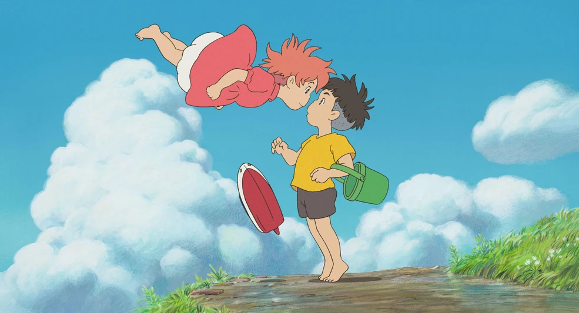

About Ponyo
Ponyo is a magical, half-goddess goldfish princess from a movie who wants to see the human world and meets a friend.

Ponyo and Sosuke.
Ponyo’s characteristics
- She’s curious
- she’s observant
- she’s happy
- she’s kind

Ponyo is a magical, half-goddess goldfish princess from a movie who wants to see the human world and meets a friend.

Ponyo and Sosuke.